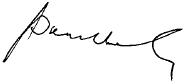

As at 31 December 2016
We are pleased to present our report for the financial year ended 31 December 2016.
The Board is ultimately responsible for the Group’s system of internal controls and risk management, and it discharges its duties in this area by:
- Focusing on issues relevant to the integrity of the Company’s financial reporting;
- Determining the nature and extent of the significant risks which are acceptable in achieving the Group’s strategic objectives; and
- Ensuring that management implements effective systems of internal controls and conducts risk identification, assessment and mitigation.
The Board of Directors has delegated the responsibility of assisting the Board on the responsibilities (as set out in Section 1.3 of this Report) to the Audit Committee (‘the Committee’) in SLT and its subsidiaries except Mobitel (Private) Limited which has its own Audit Committee.
Following a review by the Committee and the Board, the Risk Management Committee was folded into the Committee to enhance the effectiveness of risk management and governance.
1.1 Audit Committee Terms of Reference and Internal Audit Charter
During the financial year, the Committee reviewed and updated the duties and responsibilities of the Committee set out in its Terms of Reference to be in line with best industry practice. The Committee has conducted its affairs in compliance with the Terms of Reference, which are available on the Company’s website www.slt.lk.
1.2 Composition of Audit Committee
The Committee comprise five NEDs whose biographical details are set out on pages 6 to 9, of whom three are Independent Directors.
The composition of the Committee meets the requirements of the Listing Rules of CSE and is as follows:
Mr Chan Chee Beng – Chairman
Ms Lai Choon Foong
Ms Chandra Ekanayake
Ms Nilanthi Pieris
Mr Rohan De Silva
Mr Chan Chee Beng and Ms Lai Choon Foong are members of international and Malaysian professional accounting bodies. The Committee members have a good mix of skills, expertise and experience in commercial, telecommunications, financial and audit matters due to the current senior positions or previous positions in other organisations.
The Company Secretary functions as the Secretary of the Committee.
1.3 Activities of Audit Committee
The role and responsibilities of the Committee are set out in full in its written Terms of Reference.
The major activities undertaken by the Committee during the financial year are summarised below:
1.3 a. Internal control and risk management
The Committee had reviewed the overall adequacy and effectiveness of the systems of internal control in the Group through the review of key internal and external audit findings reported by the Internal Auditors and External Auditor, and discussions with senior management.
The Committee reviewed the status of risk management activities in the Group presented by the management which included the risk profile, changes to the key risks and mitigation plans, to ensure that key risks were identified, managed and tracked.
1.3 b. Financial reporting
The Committee reviewed the quarterly financial results and annual audited Financial Statements of the Group with the management and discussed with the External Auditor, before recommending their approval and release of the financial results to the CSE.
The Committee discussed with the management to ensure that matters relating to financial reporting set out in its Terms of Reference, listing requirements of the CSE, provisions of the Companies Act No. 07 of 2007 and Sri Lanka Accounting and Auditing Monitoring Board had been complied with.
1.3 c. External audit
The Committee had assessed and was satisfied that the independence of the External Auditor has not been impaired by any event or service that gives rise to a conflict of interest; and had ensured that the appointment of the External Auditor complies with the Companies Act and any other related legislation.
The Committee reviewed the audit plan of the External Auditor including their scope of work, audit approach and proposed fees for their quarterly reviews of the financial results and statutory audit of the Financial Statements for the financial year.
The Committee also deliberated on the review and audit results, issues and resolution of issues reported by the External Auditor together with them and management.
The Audit Committee having considered the importance of periodic rotation of Auditors in line with good corporate governance practice recommended a change of Auditors at the forthcoming Annual General Meeting as KPMG has been the Auditors of the Company since 2010. The Committee recommends to the Board the appointment of Messrs Ernst & Young, Chartered Accountants as Auditors of the Company for the financial year ending 31 December 2017, subject to the approval of the shareholders at the forthcoming Annual General Meeting.
1.3 d. Group internal audit function
The Group has an independent internal audit function which reports directly to the Committee. The function provides assurance on the effectiveness of governance, internal control and risk management in the Group.
The Committee reviewed and approved the risk-based annual internal audit plan which included the use of external specialist assistance for special and technical audits and assessed the performance of the internal audit function against the plan.
The Head of Internal Audit presented the key audit or investigation findings and recommendations arising from the internal audits or investigations conducted to the Committee and ensured that timely corrective action was taken by management to address the issues.
1.4 Meetings of Committee
The Committee had five meetings during the financial year 2016 and the attendance at these meetings is shown in the Corporate Governance Report on page 24. The Group Chief Executive Officer, Chief Financial Officer and Group Chief Internal Auditor attended all meetings by invitation. The External Auditor was also requested to attend the meetings as and when required.
The Chairman of the Committee reported the proceedings and significant issues discussed at the Committee meeting to the Board after every Committee meeting. The minutes of the Committee meetings were circulated to the Board.
The Committee dealt with the following key activities during the financial year 2016:
| Month of meeting | Key activities |
| February |
|
| March |
|
| May |
|
| August |
|
| November |
|
1.5 External Auditors’ fees
The fees paid to the External Auditor during the financial year 2016 are disclosed in Note 7 to the Financial Statements.
On behalf of the Group Audit Committee,

Chan Chee Beng
Chairman
Audit Committee
17 April 2017